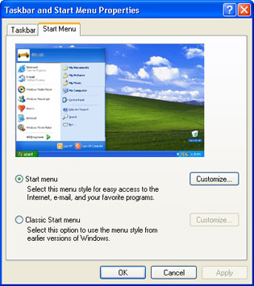
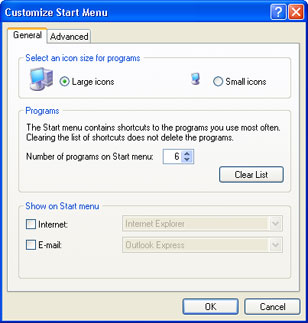
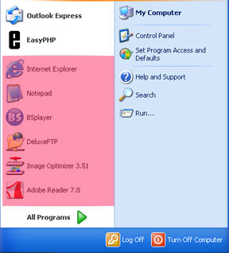
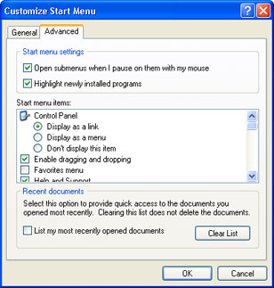
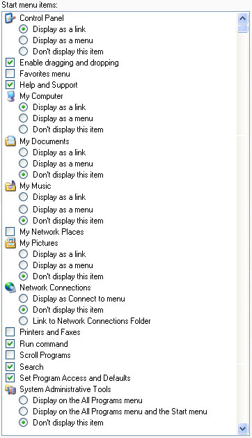
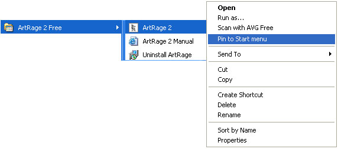

Free
computer Tutorials
|
Free
computer Tutorials
|
|
 home home |
Stay at Home and Learn | ||||
Customize the Windows XP Start MenuThis tutorial assumes that you have set the Control panel to Classic View. To see how to do this, click this link (opens in a new window): Set the Control Panel to Classic View
You can customize your Windows XP Start menu. To get at the settings for the Start Menu, click Start and then Control Panel. From the Control Panel, double click Taskbar and Start Menu. This will bring up a dialogue box. You can also bring this dialogue box up by clicking the Taskbar with your Right mouse button. From the menu, select Properties. Click the Start tab from the Taskbar and Start Menu Properties box. You should see this:  There are two options on this screen: to have the new-look XP start menu, or the older one (Classic) familiar to Windows 9X/Windows 2000 users. We'll stick with the first one, Start menu. But if you prefer the Classic menu, then select it from here. Click the Customize button to see the options.
But with the first option, Start menu, selected click the Customize button to see the following dialogue box:  The general tab has three sections. The first of these allows you to select the size of the icons on the start menu, Large or Small. The second option, Programs, lets you select how many programs to display in the "most often used" section. This is the section highlighted in the image below:  The Show on Start menu option is for which Internet Browser or Email programme you prefer. Select one of these, and the drop-down list becomes available. The Advanced tab has more options. Click this tab to see the following:  The first two options are easy ones. If a menu item has a black arrow next to it, it's know as a submenu. To save you actually clicking on it, you can just display the submenu by hovering your mouse over it. Untick the box if you prefer to click. If you place a tick in the box "Highlight newly installed programs" then new items on your All Programs list will have an orange tint to them. To really customize your Start menu, the list under Start menu items
is the one to concentrate on. Scroll down to see the options. But here's
an image of the full list: 
There's a lot of things you can change. For example, if you don't want the My Document folder on your Start menu, select the option "Don't display this item". The same goes with the My Music, and My Pictures folders. You'll have your own preferences for your Start menu, so play around with the above options. XP also lists, by default, a list of your recently opened documents. If you want to hide this list from prying eyes, uncheck the box "List my recently opened documents".
Add a programme to the Start menuIf you want to add a programme to the Start menu, there's an easy way
to do it. Locate the programme on the All Programs menu. Right click
the programme to see a pop up menu. From the menu, select "Pin
to Start menu":  After you left click Pin to Start menu, click the Start button to see your new menu item.
<--Back One Page Move on to the Next Part--> |
|||||
|